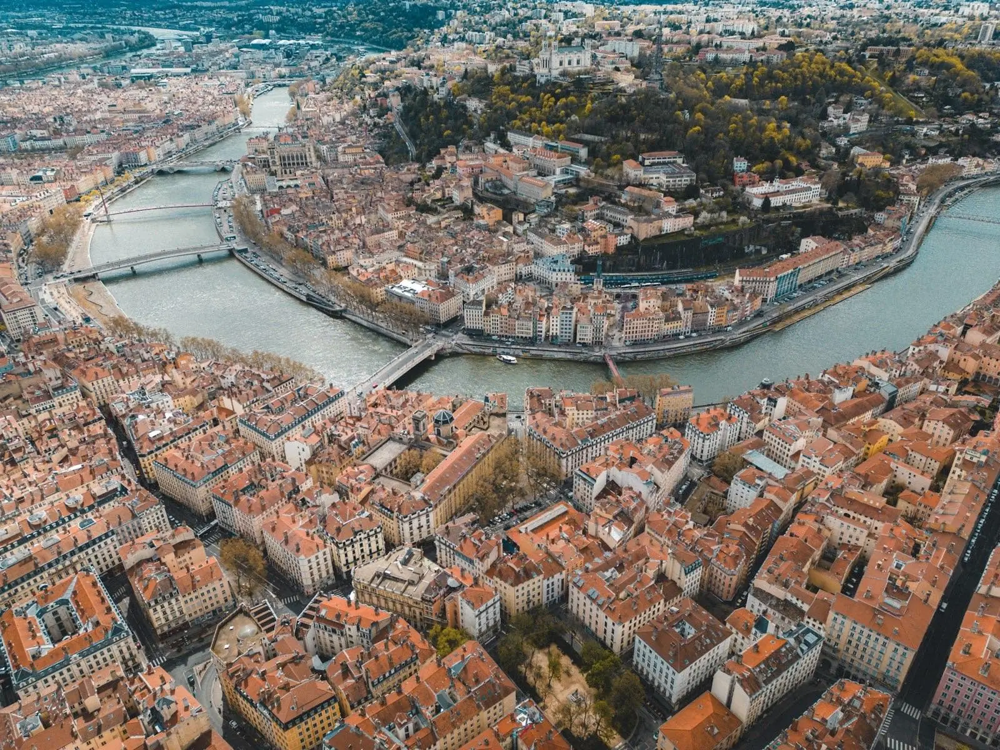

Lyon eet liever lang dan luid. De stad ligt op de samenkomst van twee rivieren en op de schouders van duizend jaar handel — wat zich vertaalt in bouchons die nog steeds quenelles serveren zoals in 1934, en in chefs die een Michelin-ster hebben gewonnen en die volgende ochtend gewoon weer in de markt staan. Tussen Vieux Lyon en Confluence ligt een geografie die je het beste te voet leest. Geen stad voor één weekend, eerder voor één terugkeer.
Drie steden binnen anderhalf uur die om andere redenen de moeite zijn. Niet meer Lyon, niet helemaal weg ervan — andere paginas in dezelfde regio.
Een private collectie binnen handbereik — sla adressen op, maak lijstjes voor wie meereist, schrijf wat je je wil herinneren. Geen advertenties, geen aanbevelingen die je niet wilt.